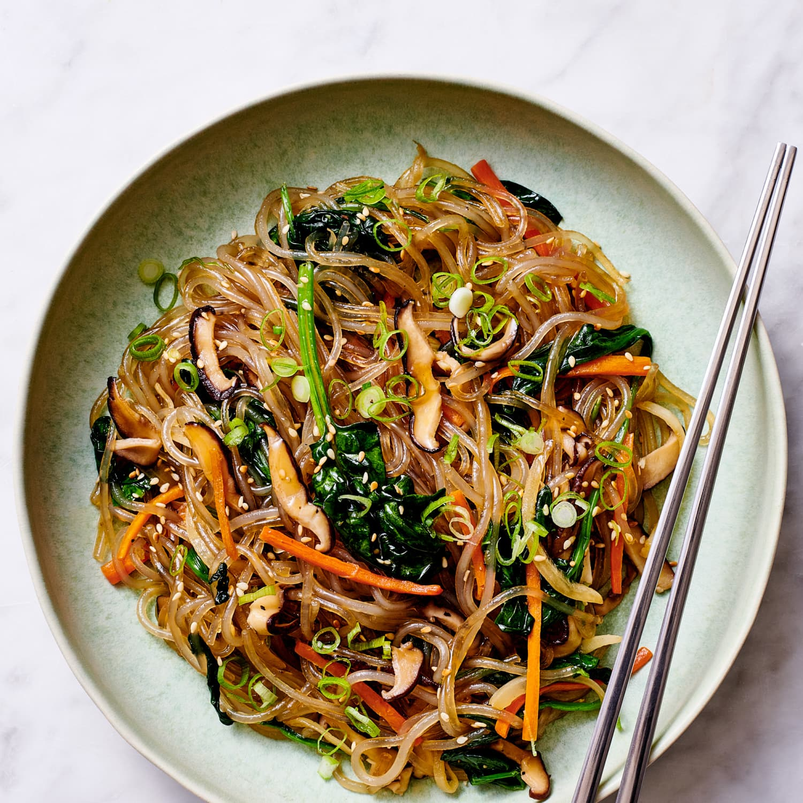

Japchae

Description
The bright, colourful Korean noodle dish made with an abundance of vegetables, juicy bits of marinated beef and a sesame-forward dressing.
Made with sweet potato noodles which have a unique slippery, chewy texture, this is sort of a stir fry, sort of a noodle salad,
Ingredients
- Glass Noodles
- Sugar
- Salt & Pepper
- Garlic
- Sesame Oil
- Soy Sauce
- Beef Short Ribs
- Onion
- Shitaake
- Baby Spinach
- Green Onion
- Cut short ribs
- Cook the noodles with the beef and add the sauces
- Cook the vegetables in another pan
- Now mix both of the pans together and cook a bit more